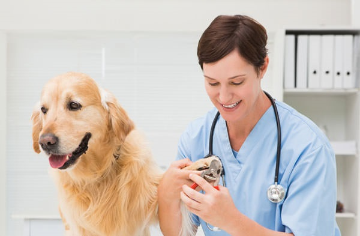

How to Help The Vet Make Your Dog’s Appointments The BEST
As loving guardians, you want the BEST for your pets and do all you can to make it happen. You feed them a premium diet. You offer the most comfortable nighttime “zzz’s” with cozy bedding. You keep canine body and mind in top shape with walks, park visits and games. And to guard their health, you also take your best friends to the veterinarian for all regular and urgent appointments. But how can you help make these visits the BEST? How can you assist your pets’ medical professionals so they can deliver the most complete and effective treatment possible? Well, vets across the country gave me four tips.
When you set up your dog’s appointment, clarify the type of visit you need and find out how to “prep” for it.
You may just need a quick vaccination appointment if your dog’s day camp suddenly requires an additional immunization. You may be scheduling your pooch’s annual full checkup. Or a comprehensive exam may be needed for a health problem. The more clear you can be about the appointment type, the better the time can be scheduled to give your dog the care required.
And once you have set the appointment, ask how you should prepare for it. For example, should you bring urine, fecal or other samples? Should you limit your dog’s food prior to the visit? If your pet is highly anxious, does your vet have suggestions and/or medications so your pooch can handle all the necessary exam elements? Overall, clarifying the visit’s type and preparing for it can elevate its value.
And as Dr. Dawnetta Woodruff, DVM, St. Louis, MO told me, “When stepping into an exam room, a veterinarian’s goal is always to give that pet the very best care. Having a clear picture of what brings the patient to see us that day is vital! With proper communication, we can set aside enough time to do a thorough exam, discuss the family’s questions and concerns, and come up with a plan that works best for their unique situation.”
During your visit, inform your veterinarian about all your pet’s health problems and remember to ask your questions.
This is the top recommendation among the vets I contacted! And I know how challenging it can be to remember everything you want to report and ask. But the vets I spoke with gave helpful suggestions — the first being to write issues and questions down.
Dr. Sunday Cozzi, DVM, Aiken, SC suggested, “Keep a notebook handy to write down questions/concerns that pop up prior to the appointment. It’s amazing how many things will pop into your head in the weeks/days/hours prior to the appointment, then disappear as soon as you walk in the door, only to reappear once you get back to your car.” (I understand. I now use both a kitchen counter notebook and my smartphone’s “notes” app to log health concerns and questions as soon as they occur, so I can have them ready.)
The second pet health reporting strategy is to include video with your written notes. Dr. Cozzi added, “If your pet is having a problem (e.g. seizures, a limp after certain exercises, or a strange cough) that your vet might benefit from seeing or hearing, try to record the event when it happens, because more often than not, it won’t happen in the exam room.”
Keep track of what happens in the appointment and the next steps required.
If your clinic does not provide reports, find the way that works best for you to record findings and recommendations. As Dr. Becky Frank, DVM, Berks County, PA explained, “I find that if a client takes notes, they may review them later and remember things they would have otherwise forgotten. It helps clients keep things organized and can solidify things in their minds, as well as allowing them to critically think about what their vet said.”
And if the appointment is for an urgent health matter, Dr. Sunday Cozzi added a thoughtful suggestion, “I recommend ensuring you have an objective friend or family member with you when you meet with the vet to receive information regarding further diagnostic and treatment options. It’s amazing how much you can miss when you are wrapping your head and heart around shocking news.”
And finally, enter the appointment with an open mind to your vet’s diagnosis and recommendations.
When a beloved buddy is experiencing health problems, it is natural for pet guardians to want to find out as much as they can, as soon as they can. You tend to go online to pet health sites, talk to other pet parents, and often make assumptions or reach your own conclusions (sometimes not accurate) before the vet appointment.
What can result is that either a significant amount of appointment time is used asking the vet to confirm these conclusions or some of the pet’s problems aren’t mentioned at all because you assume they aren’t treatable.
This happens often for older dog issues. Dr. Jenn Wardlaw, DVM, MS, DACVS, St. Louis, MO told me, “Pet guardians may see their animal slowing down and make the assumption that it’s a normal sign of aging, when the pet is actually in pain or has developed arthritis, which is treatable.”
And remember that opening your mind to your vet’s diagnosis and treatment recommendations does not mean you can’t ask questions and even seek additional medical advice. As Dr. Candy Sebourn, DVM, St. Louis, MO stated, “When pet guardians ask for more information or want to look further into a health problem with the help of a specialist, we do all we can to assist. We work together for the best outcome.”
So help your vet help your pet. Just think about these tips the next time you are scheduling a medical visit for your canine best friend. With your assistance, your dog’s devoted doctor can deliver the BEST care possible – and make every appointment count!